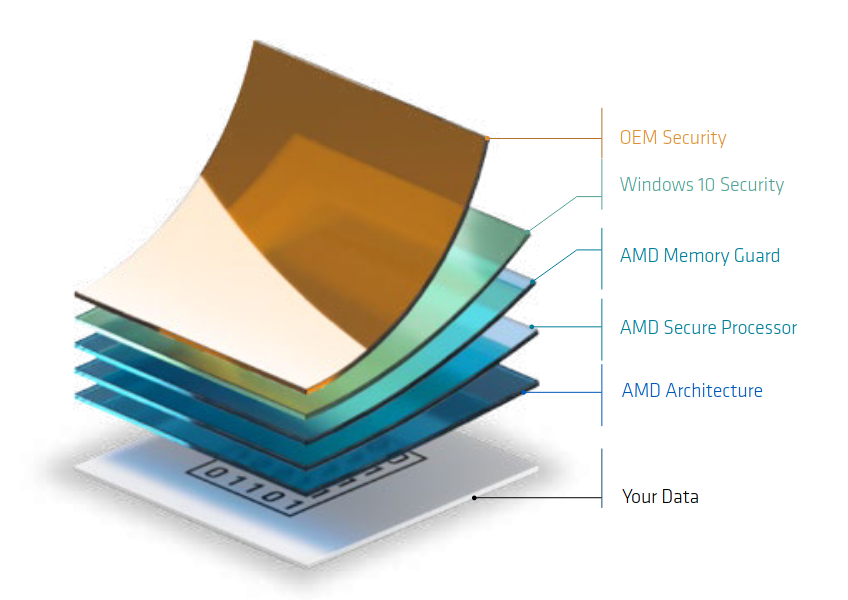

Windows 10 が最後って言ったぢゃん！

あれは嘘だ！
ちっくしょー！
…気を取り直して。
ビル・ゲイツ氏が引退してからかなりまともになった Microsoft だが，どうにも Windows に関しては「やらかす」度合いが酷い気がする。 というわけで，2021年内に Windows 11 を出すとか何とか。 最後の Windows だったはずの 10 は2025年でサポートが切れるとか何とか。
自宅マシンはとっくに Ubuntu に換装済みなので Windows がどうなろうと知ったことではないのだが，職場のマシンや関わってるプロジェクトのシステム要件を見直す必要があるのは面倒な話である。 そこで今後のために Windows 11 の要件をまとめておこう。
ハードウェア要件
一番重要な点は 32bit アーキテクチャが対象外となることだろう。 まぁ，この辺は時代の流れというやつで仕方がない。 「Ubuntu にすればいいじゃない」という声も聞こえるが， 32bit アーキテクチャをサポートする LTS の最終版である 18.04 (Bionic Beaver) のサポート期限が2023年4月なので1，乗り換えるメリットはないだろう。
今ある 32bit 機は4年以内に引退させ，物理的にオフラインにしてソリティア専用機として余生を送らせるのがいいだろう。
その他の要件は以下の通り2。
Windows 11 Windows 10 プロセッサー 1GHz以上、2コア以上、
64bit互換CPU/SoC1GHz以上のCPU/SoC メインメモリ 4GB 2GB（64bit）、
1GB（32bit）ストレージ 64GB以上 32GB（64bit）、
16GB（32bit）グラフィックスカード DirectX 12以降（WDDM 2.0） DirectX 9以降（WDDM 1.0） ディスプレイ 対角9インチ以上、
8bitカラー、720p800x600
64bit アーキテクチャでシングルコアってことはないだろうから，プロセッサ要件はいいか。 古いミニノートだとディスプレイ要件を満たさないのか？
Windows 10 のメモリ要件が 2GB 以上というのは知らなかった。 でも現時点でも起動直後に 4GB のメモリを専有してるんだけど，これで 11 になったら 8GB でも足らなくなるんじゃないの？
ファームウェア要件
ファームウェアについては UEFI (Unified Extensible Firmware Interface)，セキュアブート，および TPM (Trusted Platform Module) 2.0 に対応していることが要件となる。 これ 64bit 機でも古いマシンだと要件を満たさないものが結構あるんじゃないだろうか。
この前買った自宅マシンは TPM 2.0 に対応してるのかと思ったが，大丈夫ぽい。
{kind=link}
AMD Ryzen シリーズは “AMD Memory Guard” としてチップレベルで対応してるんだってさ。

AMD MEMORY GUARD
うんうん。
TPM の確認
私の周辺の反応を見ると TPM 2.0 未対応で非互換と判定されることが多いらしい。
Windows 環境で TPM 対応の有無をチェックするには tpm.msc を起動するといいようだ。
TPM に対応していないマシンでは「互換性のある TPM が見つかりません」とか表示される。
Linux 環境で確認する場合は，カーネル等の構成によると思うが，たとえば
$ sudo dmesg | grep -i tpm
[ 0.004558] ACPI: Reserving TPM2 table memory at [mem 0xba8c4000-0xba8c404b]
てな感じにカーネル起動時のメッセージログから調べることもできる。
SoC に組み込まれている fTPM の場合は，取り扱いに若干の注意が必要らしい。
Ryzenの場合、CPUを交換するとTPMのデータも置き換わる(CPUのSoCにTPMが搭載されているため)。Windows 11導入の際に、CPU交換なども考えている場合は、鍵の扱いに注意が必要だ。BitLockerなどはあらかじめ解除してからCPUを交換しないと起動できなくなる可能性がある
ふむふむ。
ファームウェアに関するブックマーク
- TPM 2.0 Library | Trusted Computing Group
- Windows での TPM の使われ方 - Microsoft 365 Security | Microsoft Docs
- セキュリティ プロセッサ (TPM) ファームウェアを更新する
- 【特集】Windows 11で必須になった「TPM 2.0」って何？TPMの役割や確認方法を紹介 - PC Watch
- UEFI/GPT ベースのハード ドライブ パーティション | Microsoft Docs : 実は GPT (GUID Partition Table) によるストレージのパーティション管理が隠し要件になっているらしい。旧来の MBR で構成している Windows 環境に対してアップグレードしようとすると NG になるかもしれない
- ASCII.jp：Windows 11では、Windows 10で追加された数々の新機能が早くもリストラされる (1/2)
アプリケーション
標準で入るアプリケーションはかなり淘汰されるようだ。
- 管理者と一般ユーザーの両方が、Windows Store以外からアプリケーションをインストールできないようにしたり、多くのWindows管理ツールをブロックしたりする「Sモード」機能は、Windows 11のHomeエディションでしか利用できなくなる。
- 「Internet Explorer」（IE）はWindows 11に搭載されない。一部の古いウェブサイトや業務アプリケーションにアクセスする必要がある企業顧客は、新しい「Microsoft Edge」に組み込まれた「IEモード」を使う必要がある。
- 「Cortana」にも別れを告げることになる。かつては「Siri」と「Alexa」をライバル視していたCortanaだが、もはや初回起動時に音声案内が流れることもなければ、タスクバーにアイコンがピン留めされることもない。
Cortana は要らんよねぇ。 職場で Windows 10 機を支給されたときに真っ先に潰したし（笑）
他に削除・制限される機能は以下の通り（「次期OS「Windows 11」は「Internet Explorer」無効 ～廃止・削除される機能が案内 - 窓の杜」より抜粋）。
- 壁紙の同期 → 同期できなくなる
- 数式入力パネル → 削除
- ニュースと関心事項 → ウィジェットに置き換え
- ロック画面の簡易ステータス → 廃止
- Skype の「今すぐ会議」 → Microsoft Teams のチャット機能に置き換え3
- Snipping Tool → 「切り取り & スケッチ」機能に置き換え？
- ［スタート］画面
- タイルをグループ化する機能はなくなる。レイアウトは今のところサイズ変更できない
- Windows 10からの移行時にピン留めアプリ・サイトは移行されない
- ライブタイルは使用できなくなる。後継機能は新しいウィジェットとなる
- タブレットモードは廃止される。代わりの機能が追加されるようだ
- タスクバー
- 「People」がタスクバーからなくなる
- アップグレード前にカスタマイズしたものを含む一部のアイコンは、アップグレードしたデバイスのタスクトレイに表示されなくなる
- タスクバーの位置は画面下部にのみ。上や横には表示できない
- アプリはタスクバー エリアをカスタマイズできなくなる
- タイムラインはなくなる。「Microsoft Edge」にそれを補完する機能が導入される
- 18インチ以上のモニターでタッチキーボードはキーボードレイアウトのドック・アンドックが不能となる
- 「Wallet」は削除される
- 以下のプリインストールアプリは廃止（Microsoft Store からインストールは可能）
- 「3D ビューアー」
- Windows 10 向けの「OneNote」
- 「ペイント 3D」
- 「Skype」
プリインストールアプリは本当に最小限にしていただきたいものである。
【2021-07-04 追記】 「第8世代プロセッサ」が前提？
2021-06-28 の Microsoft のブログでシステム要件の前提として以下の3つの原則を挙げている。
- Security. Windows 11 raises the bar for security by requiring hardware that can enable protections like Windows Hello, Device Encryption, virtualization-based security (VBS), hypervisor-protected code integrity (HVCI) and Secure Boot. The combination of these features has been shown to reduce malware by 60% on tested devices. To meet the principle, all Windows 11 supported CPUs have an embedded TPM, support secure boot, and support VBS and specific VBS capabilities.
- Reliability. Devices upgraded to Windows 11 will be in a supported and reliable state. By choosing CPUs that have adopted the new Windows Driver model and are supported by our OEM and silicon partners who are achieving a 99.8% crash free experience.
- Compatibility. Windows 11 is designed to be compatible with the apps you use. It has the fundamentals of >1GHz, 2-core processors, 4GB memory, and 64GB of storage, aligning with our minimum system requirements for Office and Microsoft Teams.
更に
Using the principles above, we are confident that devices running on Intel 8th generation processors and AMD Zen 2 as well as Qualcomm 7 and 8 Series will meet our principles around security and reliability and minimum system requirements for Windows 11. As we release to Windows Insiders and partner with our OEMs, we will test to identify devices running on Intel 7th generation and AMD Zen 1 that may meet our principles.
と謳っていて，いわゆる「第8世代プロセッサ」を前提としているようだ（第7世代はこれから検証）。 というわけで，2018年に公表された CPU 脆弱性への連想も成り立つわけだ。
今後パソコンを購入するのであれば（特に中古パソコンを買うのなら）この辺が目安になってくるだろう。
ブックマーク
- 新しい Windows 11 OS へのアップグレード | Microsoft
- Windows 11 の仕様 - Microsoft
- Windows 11発表。年内提供予定でWindows 10からは無償アップグレード - PC Watch
- 「Windows 11」は32bit CPUをサポートせず ～セキュアブート、TPM 2.0も必須に - 窓の杜
- マイクロソフトがWindows 11を正式発表、アマゾンと驚きの提携でAndroidアプリも利用可能に、年末商戦までに一般発売 | TechCrunch Japan
- 「Windows 11」、機能アップデートは年1回に - ZDNet Japan
- 「Windows 11」で廃止されるアプリや機能–「Cortana」も姿を消すことに - ZDNet Japan
- 「Windows 11」はAndroidアプリにも対応 ～ストアはAmazonのものを利用 - 窓の杜
- 次期OS「Windows 11」は「Internet Explorer」無効 ～廃止・削除される機能が案内 - 窓の杜
- Windows 10 ユーザーよ、2025年10月のサポート終了に備える時が来ました | ギズモード・ジャパン
- ［速報］マイクロソフト、Windows 11を発表。UIを洗練、Windows Updateは40％小さく、マルチモニタ環境が便利に － Publickey
- ［速報］Windows 11でAndroidアプリが実行可能に、マイクロソフトが発表 － Publickey
- 自作AMD RyzenマシンでTPMは利用できるのか | ちりつもノート
- 「Windows Subsystem for Android」に言及–「Windows 11」の「Android」アプリ対応 - ZDNet Japan
- Windows 11のアプリ配信の仕組みから、マイクロソフトの「大きな変化」が見えてくる | WIRED.jp
- GitHub - rcmaehl/WhyNotWin11: Detection Script to help identify why your PC isn’t Windows 11 ready : 対応度合いを詳しく表示してくれるのでベンチだが，実行にはデバイスへのアクセス権限が必要。ご利用は自己責任で
- GitHub - builtbybel/ReadySunValley: Ready for Windows11/Sun Valley update? : コマンドライン版。実行にはデバイスへのアクセス権限が必要。ご利用は自己責任で
- Microsoftが「Windows 11」のシステム要件を見直しへ ～「PC 正常性チェック」ツールはいったん撤回 - 窓の杜
- ARMネイティブの速度とx64相互運用を両立 ～Microsoft、「ARM64EC」を発表 - 窓の杜
- Windowsの「死のブルースクリーン」、「Windows 11」ではブラックに？ - ZDNet Japan
- セキュリティが強化される「Windows 11」では、古いPCのユーザーが“置き去り”にされるかもしれない | WIRED.jp
- Windows 11へのアップグレード後、Windows 10に戻せる猶予期間は10日間までと判明 | TechCrunch Japan
- 「Windows 11」へ更新できない原因を調査する「ReadySunValley」、UIを一新 - 窓の杜
参考図書

- コマンドー (吹替版)
- アーノルド・シュワルツェネッガー (出演), アリッサ・ミラノ (出演), ダン・ヘダヤ (出演), レイ・ドーン・チョン (出演), マーク・L・レスター (監督), スティーブン・E・デ・スーザ (Writer)
- (Release 2015-04-24)
- Prime Video
- B00WAMAKZQ (ASIN)
- 評価
あらゆる障害を筋肉で粉砕する！ 脳みそをカラッぽにして見れる作品。
-
Ubuntu は LTS 版について10年の延長セキュリティ・メンテナンスを発表しているが， 32bit アーキテクチャは対象に含まれていないようだ。 ↩︎
-
SoC は “System on a Chip” の略。 CPU や GPU あるいはメモリやモデムといった機能をワンチップに組み込んだ構成を指すらしい。 ↩︎
-
Microsoft Teams は個人で無料アカウントを取れるようになった。 ↩︎